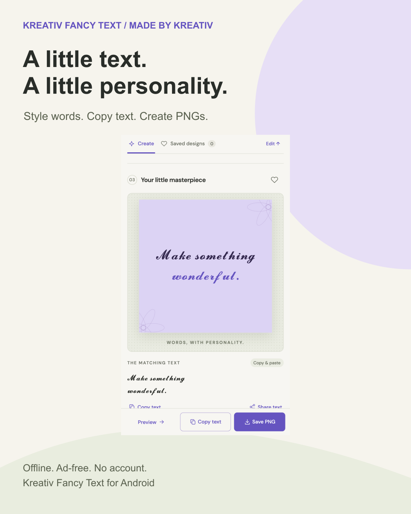
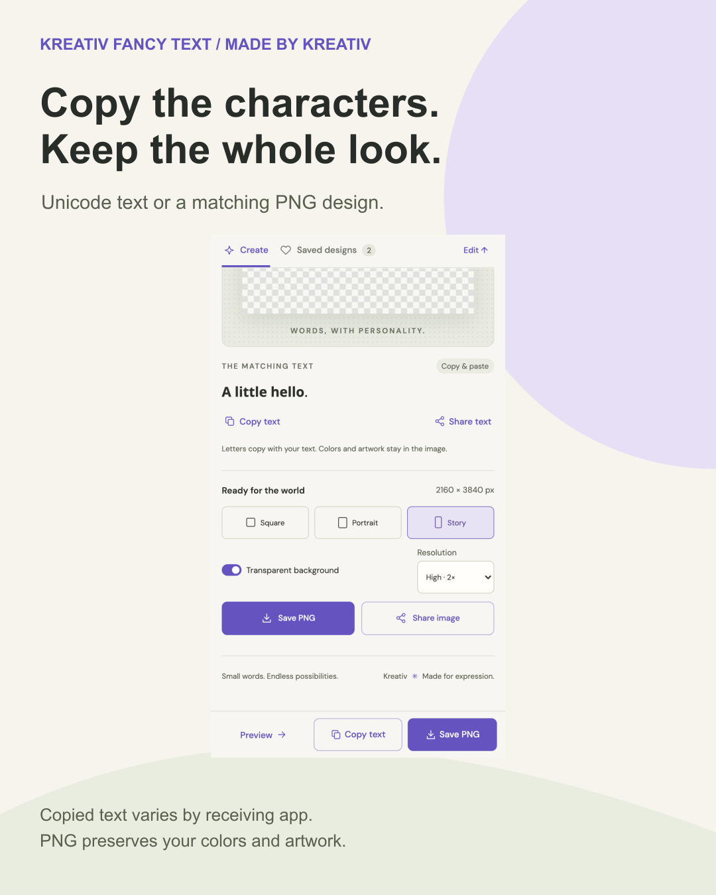
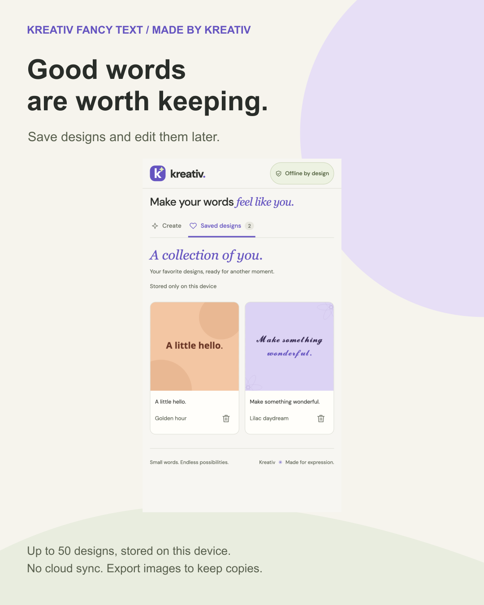
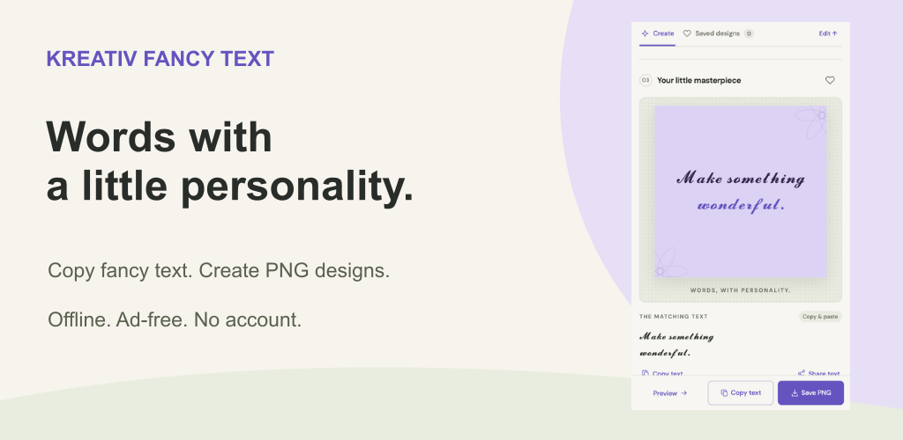
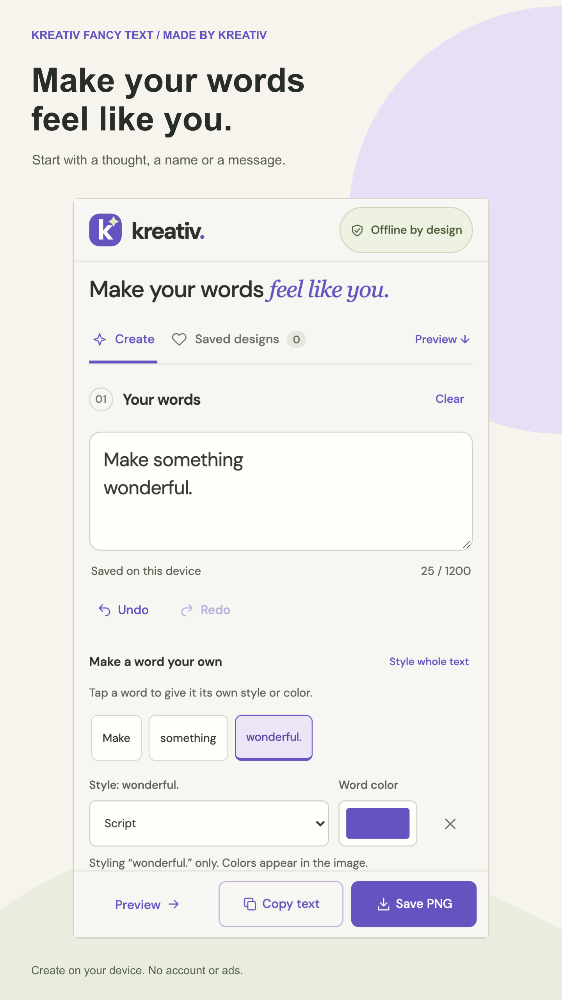
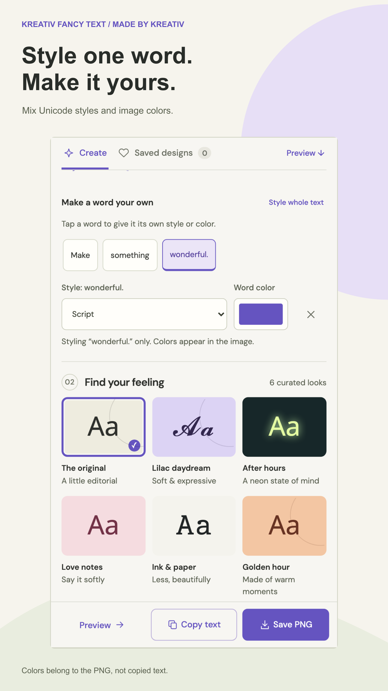
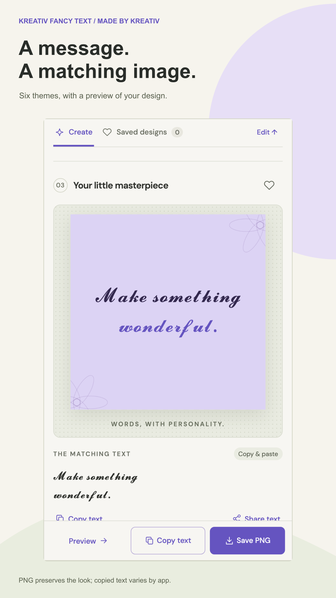
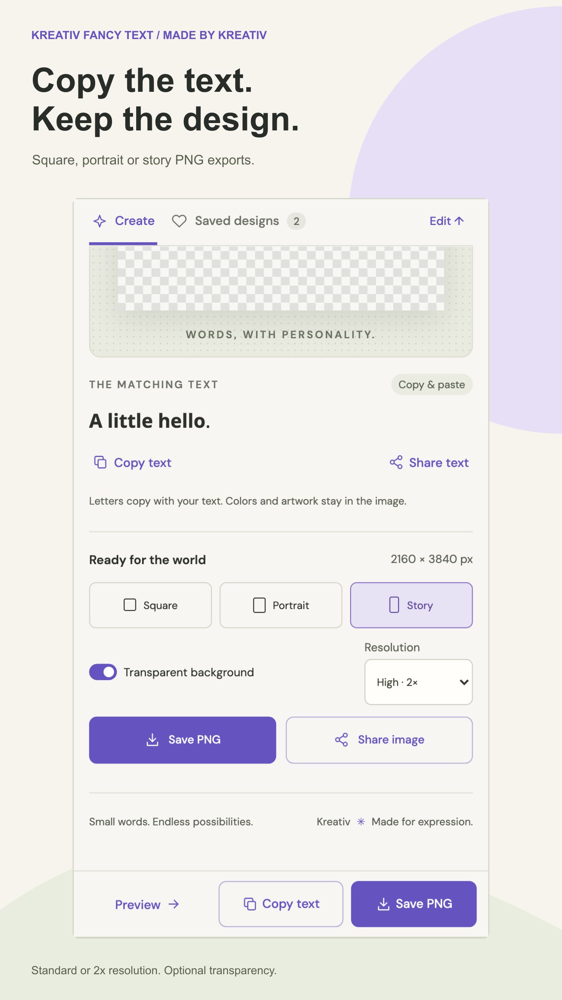
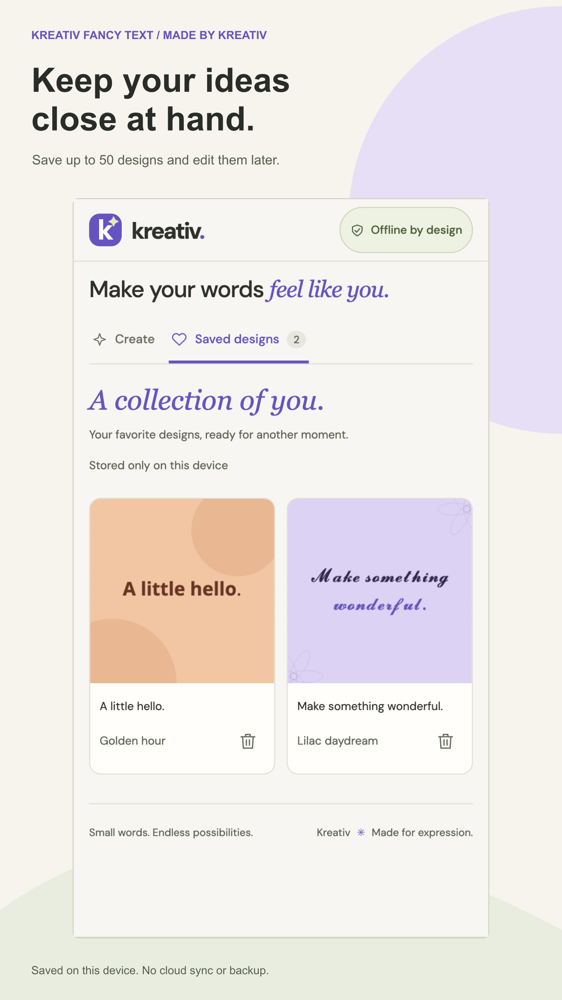

Made by Kreativ · 25 October 2026
A little text.
A little personality.
Kreativ Fancy Text promotion and listing pack for the live Android app.
The website app page and tutorial are published. Social posts and outreach remain drafts.
Actual app UI, no generated photos or baked-in AI marks. Browser captures of the bundled 1.0.1 interface—not physical-phone captures. Copied Unicode text and PNG artwork are different outputs.
Graphic 01 · launch






Launch caption
A little text. A little personality. I made Kreativ Fancy Text for Android: write a message, style individual words, then copy the fancy text or save a matching PNG design. 17 text styles. Six themes. Square, portrait and story images. Everything is created on your device—no account, ads or internet connection needed. Copied text uses Unicode, so its appearance depends on the app you paste into. PNG keeps your colors and design. Try it and tell me what you would make first. — Andrei, Made by Kreativ https://play.google.com/store/apps/details?id=com.kreativfont.studio&utm_source=launch_social&utm_medium=social&utm_campaign=fancytext_launch_202610&referrer=utm_source%3Dlaunch_social%26utm_medium%3Dsocial%26utm_campaign%3Dfancytext_launch_202610
All captions, including Romanian · Campaign links
Proposed Play copy
Title 18/30 · Short 72/80 · Full 2331/4000. Existing live text has not been changed.
Kreativ Fancy Text — read proposed copy
Create fancy Unicode text and PNG designs. Style words and work offline.
Make your words feel like you. Kreativ Fancy Text turns a short thought, name or message into copyable Unicode text and matching PNG artwork. Create on your device, without an account, advertising or an internet connection. STYLE THE WHOLE MESSAGE OR ONE WORD Explore 17 text styles, including bold, italic, script, gothic, monospace, bubble and small caps. Tap a word to give it a different text style or image color. Undo and redo edits while you work. CHOOSE A LOOK Start with six coordinated themes: The original, Lilac daydream, After hours, Love notes, Ink & paper and Golden hour. Adjust text size and alignment, and add an optional signature to your image. COPY TEXT OR SAVE AN IMAGE Copy styled Unicode text or open Android's share sheet. Export PNG artwork as a square, portrait or story, at standard or 2x resolution. Choose an optional transparent background. Save PNG opens Android's file picker so you choose the destination. KEEP DESIGNS ON YOUR DEVICE Your current draft restores when you reopen the app. Save up to 50 complete designs, reopen them and continue editing. Deleted saved designs can be recovered during the current app session. Edit history and deletion recovery are not backups. OFFLINE AND AD-FREE Fonts and assets are bundled. The Android app has no account, advertising or analytics SDK, cloud sync or internet permission. It does not install phone fonts or a keyboard and does not request accessibility service access. KNOW WHAT YOU ARE SHARING Copy text keeps Unicode characters, not image colors, decorations or the bundled image font. Appearance and character support depend on the receiving app and its fonts. Unsupported letters remain in their original form. Use PNG when you want to preserve the visual design. Input supports up to 1,200 UTF-16 code units; some characters use more than one. Long messages shrink to fit the image. If a message still cannot fit, export is blocked with an explanation: shorten it, remove line breaks or choose a taller format. Drafts and saved designs are local to this installation. Clearing storage or uninstalling removes them. Exported or shared copies stay where you put them. Sharing to another app is your choice and follows that app's policies. Privacy: https://madebykreativ.com/privacy/kreativ-fancy-text/ Support: info@madebykreativ.com
Copy-ready text · Listing audit
Proposed feature graphic

Five store screenshot layouts










Capture provenance. UI is proportionally scaled only, never repainted.
20-second screenshot tour
Silent, vertical. Actual app screenshots, not live footage.
Website tutorial
A five-image walkthrough: write, style, preview, export and save.
Read the live tutorial · Live app page · Local tutorial copy · Website copy proposal · Publication checklist
Outreach templates
Unsent; no recipients or contact routes selected. Tailor before use.
Android utility editor
For consideration: an offline text-and-PNG typography tool Hello, I am Andrei, the developer of Kreativ Fancy Text. It is a free Android app for per-word Unicode styling and matching PNG designs. It works offline, without an account or ads. I have a five-screen tour and screenshots available. Would this fit your utility-app coverage? No coverage or positive review is expected.
Typography/design newsletter
A small mobile tool for styled messages and PNG designs Hello, I publish Made by Kreativ. Kreativ Fancy Text combines copyable Unicode text with six visual themes and per-word image colors. It is not a font installer, font identifier or full design editor. If a short mobile-typography item fits your newsletter, I can share genuine screenshots and a walkthrough.
Privacy/offline-app editor
Kreativ Fancy Text: offline by design, no advertising SDK Hello, I developed Kreativ Fancy Text for Android. The packaged app has bundled fonts/assets, no internet permission, no account and no advertising or analytics SDK. Drafts and saved designs stay local; user-initiated sharing goes through Android. If useful for your coverage, I can provide the privacy policy and a screenshot walkthrough. This is a developer introduction, not a request for a favourable review.
Before publication
- Review the actual asset and caption, then choose a destination.
- Approve listing copy and new screenshots separately; do not overwrite translations.
- Publish and verify the tutorial before proposing its URL for Play.
- Use no claims about Pro, cloud backup or universal Unicode support.